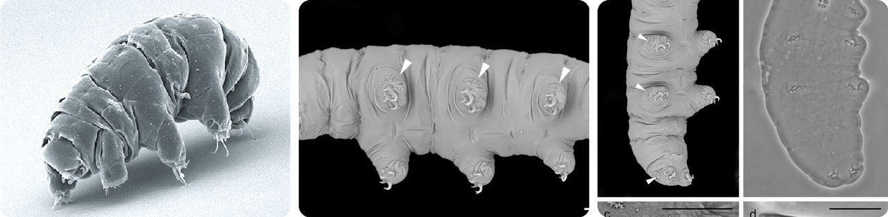
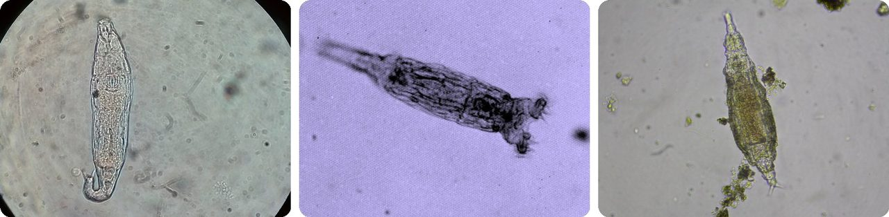
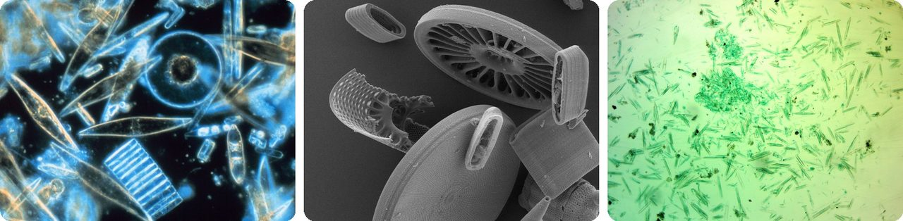
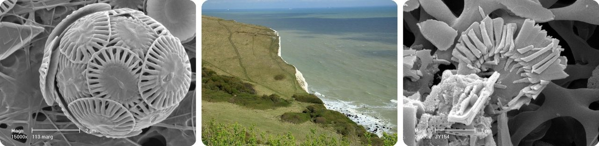
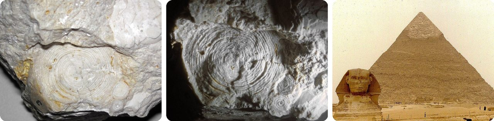
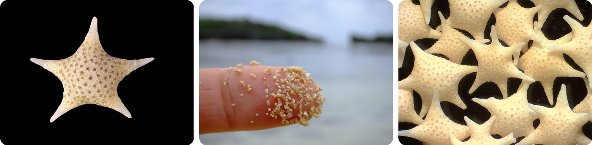
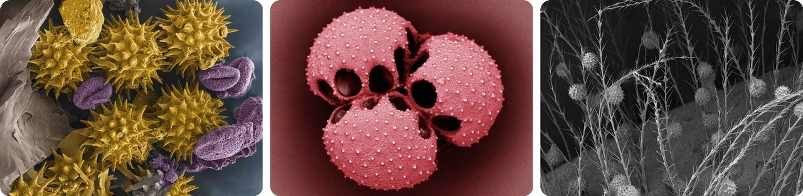
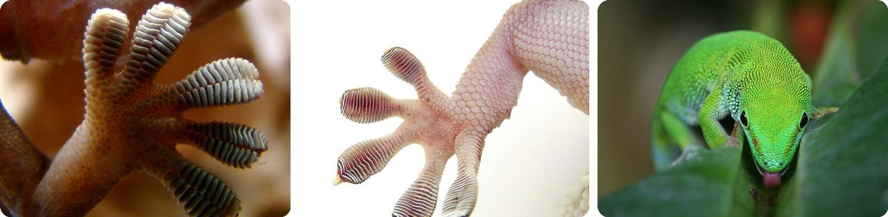
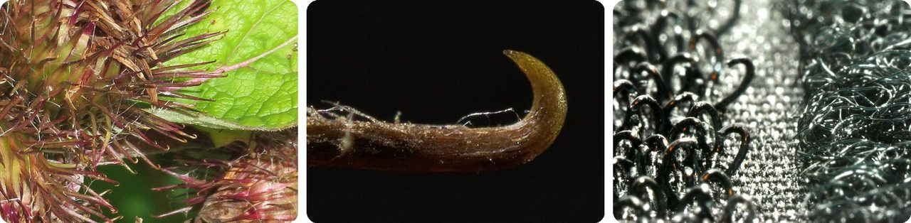
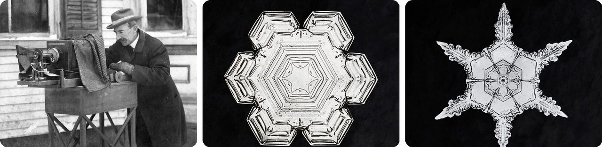

🌍 Top 10 Amazing Things Under the Microscope
Oct 13, 2026
1. 🐻 Water bears have survived a trip to outer space

Tardigrades are chubby eight-legged animals about half a millimeter long, the size of a period at the end of a sentence. In 1773 a German scientist named them "little water bear," and the name stuck.
When their moss or puddle dries out, they pull in their legs and curl into a dried-up ball called a tun. Their body stops working completely → they need no food or water for years → add water and they wake up and walk off.
In that state they can handle −272 °C, a hair above the coldest temperature possible, and +149 °C, about 50 degrees hotter than boiling water. In 2007, dried-out tardigrades rode on a spacecraft and spent 10 days exposed to outer space.
It's an animal with an off switch.
2. 🇷🇺 Rotifers woke up after 24,000 years frozen in Siberia

Bdelloid rotifers are see-through animals living in ponds, puddles and moss, most of them just too small to see without a magnifying glass. In June 2021, scientists reported reviving some that had been frozen in Siberian ice for 24,000 years, since before people anywhere had started farming.
And here's the twist: they're all female. Every bdelloid is a clone of its mother, and fossils suggest they've done without males for over 25 million years.
When they dry out, their DNA breaks into pieces. As they patch it back together, they pick up bits of DNA from bacteria, fungi and plants around them. Up to a tenth of their genes came from other living things.
It's like waking up from a nap that started in the Ice Age.
3. 💎 Diatoms are tiny algae that live inside glass boxes

Diatoms are single-celled algae floating in oceans, lakes and puddles. Each one builds a hard shell called a frustule out of silica, the same stuff glass is made from. Under a microscope the shells look like jewelry, which is why scientists call them "jewels of the sea."
They live off sunlight, just like plants, and they give off oxygen while they do it. Diatoms make 20 to 50 percent of the oxygen produced on Earth each year.
In other words, somewhere between one in five and one in two of your breaths came from a tiny glass box in the water.
4. 🏴 The White Cliffs of Dover are made of microscopic armor plates

Coccolithophores are single-celled algae that cover themselves with tiny round plates called coccoliths, made of calcium carbonate, the same stuff as eggshells. When they die, the plates sink to the sea floor.
Long ago, in the age of the dinosaurs, the sea over southern England filled with that white mud. It piled up about half a millimeter a year, roughly 180 plates stacked on top of each other.
Over millions of years, the mud hardened into chalk. Today the White Cliffs of Dover stand up to 110 meters tall, as high as a 30-story building.
Basically, a cliff made of tiny shields.
5. 🇪🇬 The pyramids of Egypt are built from tiny sea creatures

The limestone that makes up the pyramids of Egypt is almost entirely made of the shells of nummulites. These are a kind of foraminifera, single-celled sea creatures that build shells, and these ones were shaped like flat coins.
Over 2,000 years ago, the Greek writer Strabo saw these little round shapes in the pyramid stone. His guess? They were leftover lentils from the workers' lunches.
Scientists now know they're fossils of creatures that lived in a warm sea long before Egypt had any people.
So the pyramid workers' supposed leftover lunch is really a pile of ancient shells.
6. 🇯🇵 Japan's star sand is made of tiny star-shaped skeletons

On beaches in Okinawa, some of the "sand" is shaped like tiny stars. Each grain is the skeleton of a foraminifera, a single-celled creature that lives on coral reefs. When they die, waves wash their skeletons ashore by the billions.
A Japanese legend says the grains are the children of stars that fell into the sea and were killed by a sea serpent.
Near reefs, these creatures can add up to about 1 kilogram of new sand per square meter each year, a bag of sugar's worth. That's enough that Japan grows star sand on purpose to help build up a tiny island called Okinotorishima.
Think of it as a beach that grows itself.
7. 🌸 Every plant's pollen has its own shape

To your eye, pollen is yellow dust. Under a microscope, each kind of plant has its own shape: spiky balls, bumpy balls, grains covered in tiny holes or ridges. Most grass pollen is about 20 to 25 thousandths of a millimeter wide; corn pollen is four times bigger.
Each grain wears a tough coat that protects it on its trip from one flower to another. That coat is so tough it can last as a fossil for millions of years.
So scientists can tell which plants grew somewhere long ago from the pollen left behind. Detectives use the same trick: pollen on a muddy shoe can show where someone has been.
Basically, every plant signs its name in dust.
8. 🦎 A gecko's feet stick using millions of tiny hairs

Geckos run up walls and across ceilings without glue or suction cups. The bottom of each toe is covered in millions of tiny hairs called setae, each thinner than a human hair. Every one of those splits into thousands of even tinier flat tips.
When things get extremely close together, their molecules pull very gently on each other. One tip barely pulls at all, but billions of them pressed against a wall add up to a strong grip.
If a gecko could use all of its 6.5 million setae at once, it could hold up a 130-kilogram football player.
It's like hanging from the wall with millions of microscopic fingertips.
9. 🇨🇭 Velcro was copied from burrs stuck to a dog

In 1941, Swiss engineer George de Mestral came home from a hunting trip in the Alps with his dog. Both were covered in burdock burrs, the prickly seed balls of a common weed.
He looked at the burrs under a microscope and saw hundreds of tiny hooks. They grabbed onto anything with a loop, like the threads in his clothes or his dog's fur.
So he built a fastener with tiny hooks on one strip and soft loops on the other. He named it Velcro, from the French words velours (velvet) and crochet (hook).
In other words, your shoe straps are a copy of a weed.
10. ❄️ A Vermont farmer took the first close-up photos of snowflakes

Wilson Bentley grew up on a farm in Jericho, Vermont. At 15, his mother gave him an old microscope, and he tried drawing snowflakes, but they melted before he could finish.
So he hooked a camera to the microscope. He caught each flake on a blackboard, moved it quickly onto a glass slide, and snapped it before it vanished. On January 15, 1885, at age 19, he took his first snowflake photo.
He took more than 5,000 snowflake pictures, earned the nickname "Snowflake Bentley," and helped spread the idea that no two snowflakes are alike.
Think of it as a race against melting, every single time.
Fun fact
Water bears live in moss, but you don't have to go that far to find a tiny creature: you're probably carrying one right now. Face mites, about a third of a millimeter long, live in the hair roots of your eyelashes, eyebrows and nose, and at night they crawl around your skin at about a centimeter an hour. In a 2014 study in North Carolina, every single adult tested had them. Next time: the surprising creatures that live on and inside the human body.
Photo credits (Wikimedia Commons)
- #1: SEM image of Milnesium tardigradum in active state - journal.pone.0045682.g001-2.png by Schokraie E, Warnken U, Hotz-Wagenblatt A, Grohme MA, Hengherr S, et al. (2012), CC BY 2.5
- #1: SEM Image of Eremobiotus alicatai.webp by Camarda et al., CC BY 4.0
- #1: Eremobiotus alicatai in The Lights on tardigrade biodiversity.webp by Camarda et al., CC BY 4.0
- #2: Philodina sp. (Classː Bdelloidea) - Rotifera.jpg by Juan Carlos Fonseca Mata, CC BY-SA 4.0
- #2: Bdelloid rotifer (3403951330).jpg by Ian Sutton from Oberon, Australia, CC BY 2.0
- #2: Bdelloidea sp. (16068861010).jpg by Donald Hobern from Copenhagen, Denmark, CC BY 2.0
- #3: Diatoms through the microscope.jpg by Prof. Gordon T. Taylor, Stony Brook University, Public domain
- #3: Modern diatoms under SEM 5.tif by Humanosmexicanos, CC BY 4.0
- #3: Diatoms (flickr) by kevin dooley, CC BY 2.0
- #4: Emiliania huxleyi (europeana) by unknown, CC BY 4.0
- #4: The White Cliffs of Dover (NT) 19-04-2012 (flickr) by Karen Roe, CC BY 2.0
- #4: Emiliania huxleyi (europeana) by unknown, CC BY 4.0
- #5: Nummulites gizehensis (fossil foraminifera) in limestone (Mokattam Formation, Middle Eocene; near Cairo, Egypt) 1 (flickr) by James St. John, CC BY 2.0
- #5: Nummulites gizehensis (fossil foraminifera) in limestone (Mokattam Formation, Middle Eocene; near Cairo, Egypt) 2 (flickr) by James St. John, CC BY 2.0
- #5: The Sphynx & Great Pyramid (flickr) by M McBey, CC BY 2.0
- #6: Baculogypsina sphaerulata 2.jpg by Anatoly Mikhaltsov, CC BY 4.0
- #6: Star sand Iriomote.jpg by Geomr, CC BY-SA 3.0
- #6: 2085f Japon Hatoma.jpg by Alain COUETTE, CC BY-SA 3.0
- #7: Polen de girasol amarillo y de cardo violeta SEM.jpg by Brandon Antonio Segura Torres & Priscilla Vieto Bonilla, CC BY-SA 4.0
- #7: Venus flytrap pollen grains, SEM (wellcome_collection) by unknown, CC BY 4.0
- #7: Polen en pelos de abeja SEM.jpg by Brandon Antonio Segura Torres & Priscilla Vieto Bonilla, CC BY-SA 4.0
- #8: Gecko foot on glass.JPG by Bjørn Christian Tørrissen, CC BY-SA 3.0
- #8: Lamellae (flickr) by Furryscaly, CC BY-SA 2.0
- #8: Madagascan Day Gecko (flickr) by Bernard Spragg, CC0
- #9: Burdock burrs - detail of hooks - geograph.org.uk - 6577174.jpg by M J Richardson, CC BY-SA 2.0
- #9: Arctium minus bract spine.jpg by El Grafo, CC BY-SA 4.0
- #9: Velcro (flickr) by Paul Garland, CC BY-SA 2.0
- #10: Wilson "Snowflake" Bentley.jpg by Unknown authorUnknown author, Public domain
- #10: Wilson Bentley's Snowflake 10 (ca (rawpixel) by unknown, CC0
- #10: Wilson Bentley's Snowflake 342 (ca (rawpixel) by unknown, CC0


_-_Rotifera.jpg){kind=link}
.jpg){kind=link}
.jpg){kind=link}